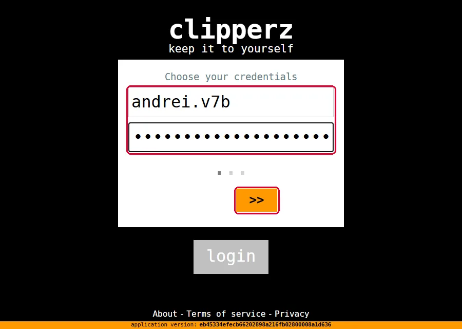
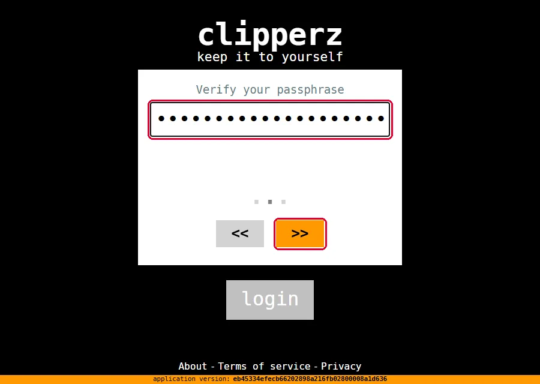
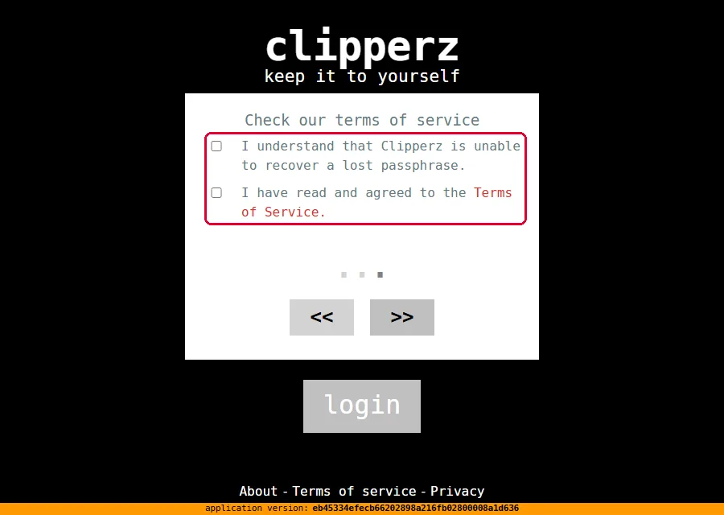
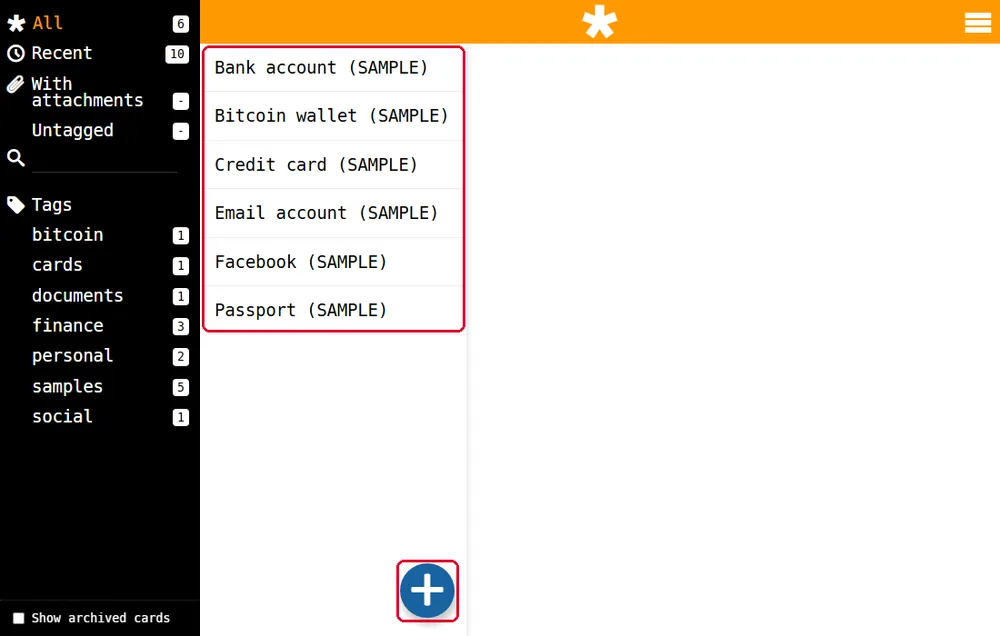
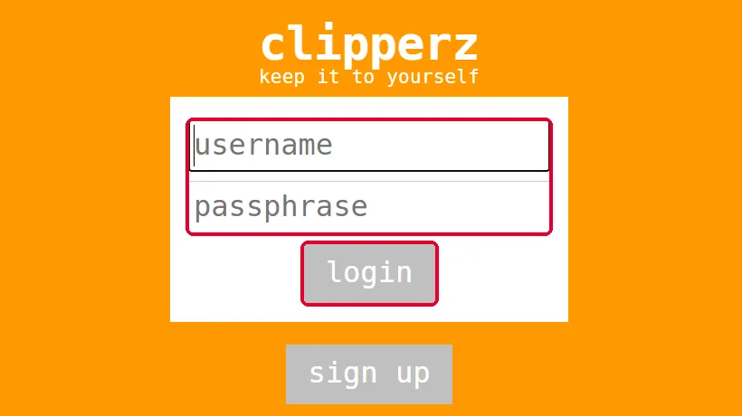

Îți faci contul, fără e-mail
La finalul paginii vei putea să alegi un nume de utilizator și o frază de acces bune și să-ți faci contul Clipperz în trei ecrane. Vei ști și de ce fraza nu are voie să se piardă.
Ce trebuie să știi
- Ce este un seif de parole și ce înseamnă criptarea. Vezi pagina 1, pașii 2 și 4.
- Ce este o parolă puternică și rețeta ei. Se învață în jocul Comunic prin Internet, în siguranță, nivelul 2, pasul „Rețeta unei parole puternice”.
- Cuvintele englezești din Clipperz (
username,passphrase,sign up). Sunt în tabelul din pagina 1, pasul 3.
Contul îl faci acasă, cu un părinte lângă tine. Nu îl face la școală: acolo te pot vedea alții când scrii fraza.
1Intri pe site-ul adevărat
Scrie în bara de adrese clipperz.is/app și apasă Enter. Înainte să scrii ceva, uită-te din nou la bara de adrese. Trebuie să scrie exact clipperz.is. Un site cu un nume asemănător poate fi o capcană care îți fură fraza.
Pe pagină vezi două butoane: login (intră) și sign up (înscrie-te). Pentru un cont nou apeși sign up.
2Alegi numele de utilizator
Numele de utilizator (username) este numele după care seiful te recunoaște. Nu e o adresă de e-mail. Îl scrii de fiecare dată când intri.
Alege un nume pe care îl ții minte ușor. Nu pune în el numele tău complet și nici anul nașterii. Așa nu spui despre tine mai mult decât trebuie.
Uite cum: andrei.v7b e un nume inventat pentru ghid. andrei.popescu.2014 ar spune prea multe: numele de familie și anul nașterii.
3Construiești fraza de acces
Fraza de acces (passphrase) este cheia seifului. E ca o parolă, dar mai lungă: o propoziție caraghioasă, pe care o ții minte ușor.
Folosești aceeași rețetă ca la parola puternică:
- alegi 4-5 cuvinte fără legătură cu tine;
- faci din ele o propoziție caraghioasă;
- pui o literă mare, o cifră și un simbol (
!?#); - numeri: sunt cel puțin 15 caractere?
Uite cum: Pisica mov mananca 7 clatite! are 29 de caractere, o literă mare, o cifră și un simbol. Nu o folosi pe aceasta: acum e publică. Fă-ți una a ta.
Scrii numele în primul câmp și fraza în al doilea. Fraza apare ca buline, ca să nu se vadă. Apoi apeși >>.

>" width="900" height="640" loading="lazy">4Scrii fraza încă o dată
Seiful îți cere fraza a doua oară: Verify your passphrase (verifică-ți fraza). Așa prinde o greșeală de tastare. Dacă greșeai o literă la prima scriere și nu observai, nu mai puteai intra niciodată.

5Promisiunea cea mai importantă
Pe ecranul 3 bifezi două căsuțe. Prima spune (textul e copiat din aplicație; îl vezi în captura ecranului 3): „I understand that Clipperz is unable to recover a lost passphrase.” Adică: înțeleg că Clipperz nu poate recupera o frază pierdută.
Ține minte asta: Clipperz nu are buton „Am uitat parola”. Îți amintești de pagina 1? Clipperz nu are cheia ta, deci nu are cu ce să-ți deschidă seiful. În termenii Clipperz scrie că, dacă pierzi fraza, datele sunt pierdute „forever” (pentru totdeauna).

Ce faci ca să n-o pierzi: o spui părinților. Un părinte o poate scrie pe o hârtie ținută acasă, într-un loc sigur. Nu o scrie în ghiozdan, în caiet sau în telefon.
După ce bifezi ambele căsuțe, apeși >>. Seiful se deschide.
6Seiful tău, prima dată
Un seif nou are deja câteva fișe de exemplu, marcate (SAMPLE). Le poți citi ca să vezi cum arată o fișă, apoi le poți șterge. Butonul rotund albastru cu +, de jos, adaugă o fișă nouă. Îl folosești în pagina următoare.

7Data viitoare: cum intri în seif
Contul îl faci o singură dată. De acum încolo doar intri în el:
- deschizi
clipperz.is/appși verifici adresa; - în primul câmp,
username, scrii numele de utilizator; - în al doilea câmp,
passphrase, scrii fraza de acces; - apeși butonul
login(intră) sau tasta Enter.

Nu am înțeles — explică-mi altfel
Numele de utilizator e ca numărul cutiei tale poștale: îl pot afla și alții, nu e un secret mare. Fraza de acces e cheia cutiei. Pe ea n-o dai nimănui. Dacă o pierzi, nu există o cheie de rezervă.
Încearcă
Exercițiu. Care este cea mai bună frază de acces pentru seif?
andrei2014parola meaGirafa verde canta 9 note pe lac?12345678
Verifică răspunsul
Răspuns: C. E lungă (33 de caractere), are o literă mare, o cifră și un simbol. Nu spune nimic despre tine. A este un nume cu un an, B e scurtă și ușor de ghicit, D sunt cifre la rând.
Încă un exercițiu. Rareș și-a uitat fraza de acces. Îi scrie lui Clipperz să i-o trimită. Ce se întâmplă?
Verifică răspunsul
Clipperz nu i-o poate trimite: nu o are. Nu are nici adresa lui de e-mail. Seiful lui Rareș rămâne încuiat pentru totdeauna. De aceea fraza o știu și părinții.